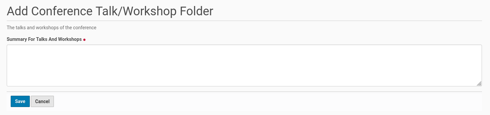
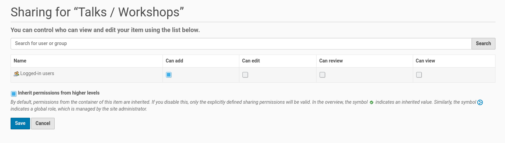

Folder For Talks And Workshops¶
Once a call for papers has been published contributors should be able to submit talk or workshop proposals for the conference. Thus there is the need to create a folder for this content types on the Plone site, because this content types are not allowed on the Plone site and its root, but only inside such a folder.
Therefore you need to create a folder for talks and workshops in parallel with the call for papers page. But it’s not difficult to create such a folder. Go to the Plone site root (‘Home’) and choose from the menu on the left side the ‘Add new’ entry and inside the opening submenu click on ‘Conference Talk/Workshop Folder’. You will get the form shown in the screenshot below.
{kind=link}
The title of this folder and its URL are set by default. You need only to add a short description (summary) to the form. Once you finished this text, save your edits. The new folder get the default state ‘private’ then. You need to publish it. You could do this within the menu on the left side. Click on the entry ‘Private’ and choose from the opening submenu ‘Publish’.
Next you need to change the setting of the folder, thus contributors could add their content (proposed talks/workshops) to the new folder. Therefore click on the entry ‘Sharing’ of the menu on the left side. You get the dialog shown below.
{kind=link}
Activate the box in front of ‘Can Add’ for logged in users and save your changes. The contributors are able to submit their proposed talk or workshop yet, once they are logged in.